Hi all,
Time is really flying this year, it has been a bit of a head down month or two and just finally coming up for fresh air. I'm particularly excited to go away with a few best friends and then go over to Paris to compete in my first half marathon. I hope everyone has had a somewhat settling few months and are making time for things that they enjoy.
This week we return to some more soccer content. This time looking at how we can create Pass Networks in Tableau. I am a bit of a broken record when it comes to talking about different data tools, but I am on a journey of wanting to highlight to those in the sports community that dabble mainly in R and Python, that they can also create visuals in Tableau (and vice versa of course!)
So today we will use python to retrieve the data (don't worry I will provide this for you in the GitRepo under the header) We will then transform the data using Alteryx, and finally we will export or data and showcase how it can be used to create a pass network in Tableau.
Small disclaimer, there may be a few tweaks along the way that you want to add to your data process, but for now I've taken a few examples from the community and tried to merge them into a structured learning process.
Okay? lets begin!
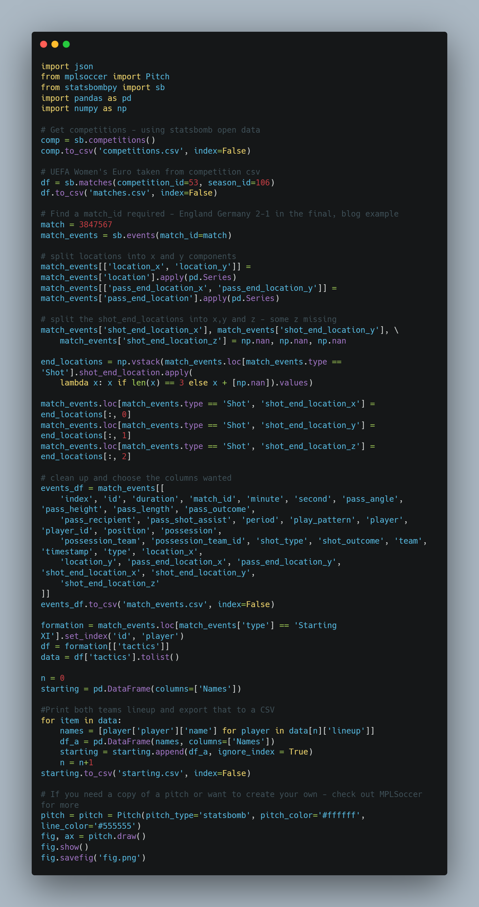
All the csv files will be found in the repository, so by all means if you want to skip this stage and just look at the output that's fine. What is the code doing? Well,
We are using a python package that looks at Statsbomb free data
We search first to see what competitions are available, and then within that the different matches. You'll see I went for the women's Euro Final between England and Germany.
We do a few transformations here just to tidy up some location X & Y values, as well as choose what columns we want in the data frame. Of course you can do this in Alteryx if you wanted but I had the code from a previous Intro to Statsbomb tutorial.
Line 50 onwards is really the only new part to the code where we are searching through a json to find the starting XI for each team. Reason being is when we build our pass network we will do it based on these 11 players.
The last chunk of code just looks to create a plain football pitch background to save down for when we use it in Tableau.
Once you've run the code you will end up with the following outputs:
Competitions.csv - All competitions in Statsbomb repo
matches.csv - The associated matches from the chosen competition ID
match_events.csv - All match events associated to the chosen match ID (Where we will get all our pass information from)
starting.csv - The starting line up for each team
fig.png - the background football pitch
So with little transformation I thought best to do the rest of the prep in Alteryx.
You can find the Alteryx workflow attached in the repo.
let's talk through the process of how the Alteryx flow works
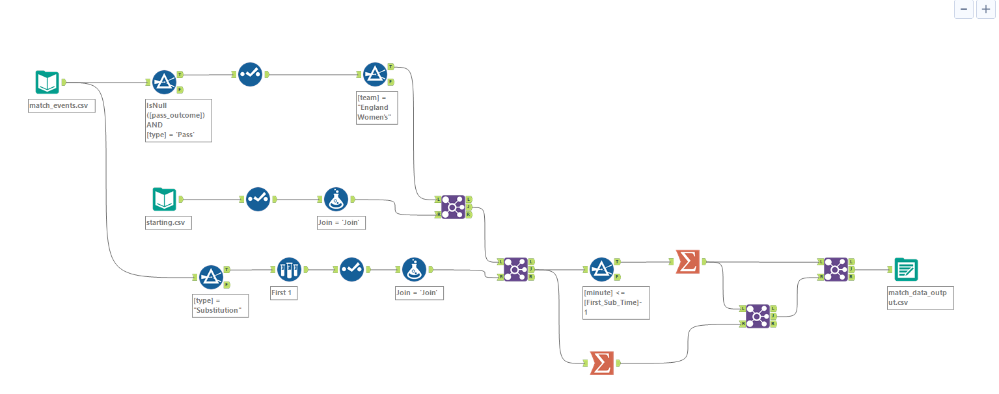
The top part of the flow connects to the raw match event data. We end up filtering for all successful passes (where the outcome is blank) and where the type of event is a pass.
I use the select tool just to pick out the columns from the data that are most appropriate and filter this data just to have the England teams information in.
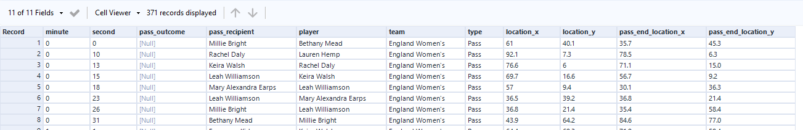
The second input takes our Starting XI and joins it to our main dataset, using an inner join. Reason being is when we go to create our pass network we only want to show 11 players on the field. For games with early substitutions perhaps this would need to be revisited.
So now the top part of the flow has for our starting 11, all the pass match events.
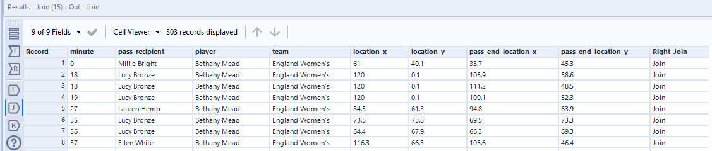
The bottom part of the flow takes our original data but this time looks at when the substitutions happen. We take the first row to see what minute the first substitution happened and then join this value into our original dataset.
Why do we do this? Well we want to show the connections of those 11 players. Again, this is something to consider as maybe it isn't truly reflective of the full game based on when this substitution happened but we can only have 11 players on the pitch. So we filter any events that happen prior to this substitution in this case.
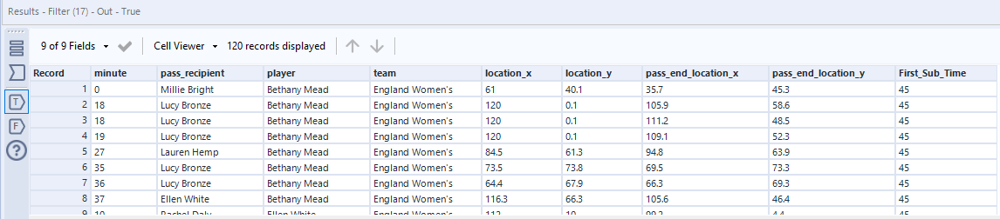
The next part of the flow is all about creating average locations for each of the players. So we take their position when on the ball and take an average of those marks.
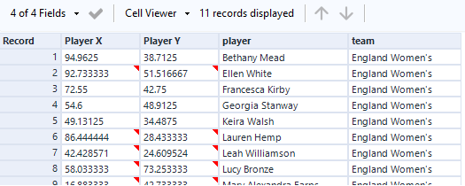
Finally we glue back in data to do with the recipient in order to know which player is passing to who! We also count how many times each player combination happened.
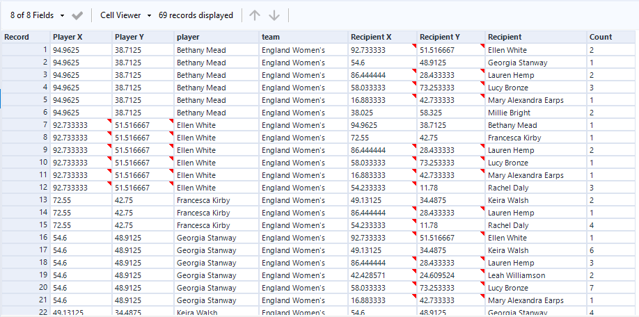
All goes well, you will end up with an output such as seen in the match_data_output.csv
From here we are ready to build in Tableau.
This is the easy bit!
Connect to the match_data_output and union it on itself by opening it up and dragging it on top of one another.
Reason we do that is because to create our lines between the players.
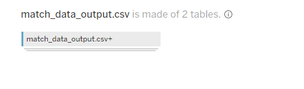
You will need the following calculations
X Line
IF
[Table Name] = 'match_data_output.csv'
then [Player X] else [Recipient X]
END
Y Line
IF
[Table Name] = 'match_data_output.csv'
then [Player Y] else [Recipient Y]
END
MP. Line
MAKEPOINT([Y Line],[X Line])
MP. Player
MAKEPOINT([Player Y],[Player X])
From here we are ready to create our chart.
Double click MP Lines to bring it into the view, then add the required dimensions to the marks card. Make sure ATTR(Table Name) is on path. This is because where we have unioned the data we want to connect the points to create the lines!
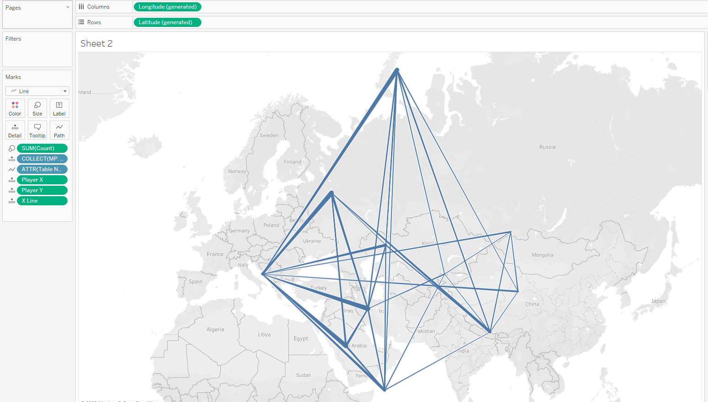
The next step is to turn off the map, background. We will reconfigure this with our football pitch.
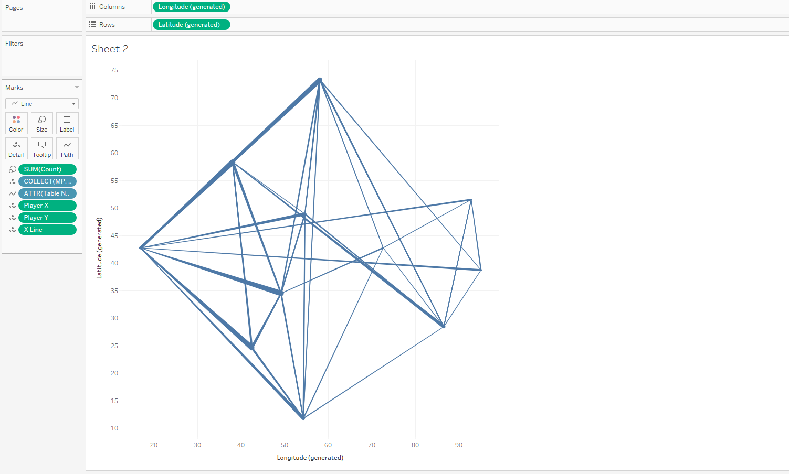
Go to map, background images and configure the pitch. Make sure you get your longitude and latitude correct for your pass network.
You can easily check you've got this correct because your goal keeper shouldn't be in the position of your right winger, ha.
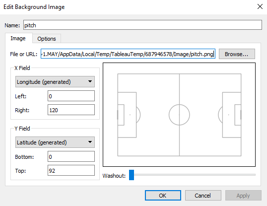
Once configured you can now either add more layers, such as where I've introduced the overlay of player circles, perhaps even a few more design elements you want to showcase - I'll leave this to your discretion
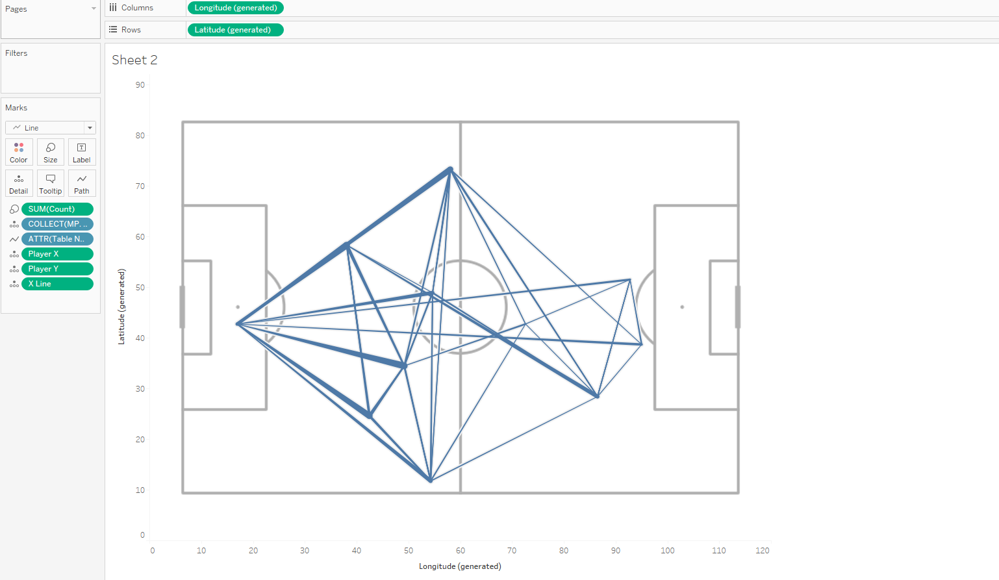
By the end of it, you can have something simple like below.
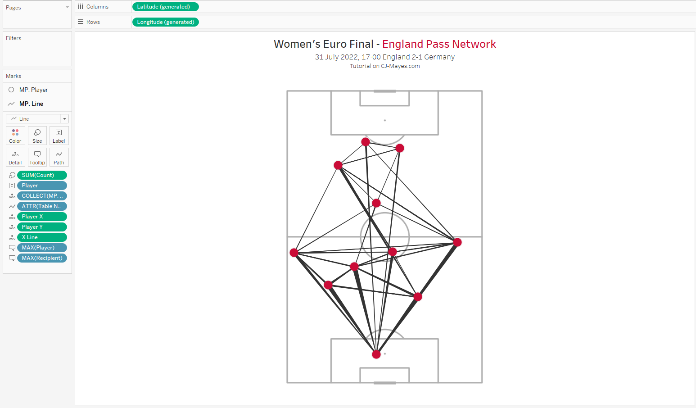
As always all the resources are found in the GitRepo as well as the dashboard is downloadable from my Tableau Public profile.
Why not go further?
Can you create a small multiple of all games leading up to the final?
Can you add in jersey numbers into the code and alteryx flow?
Can you change the design of the pitch to be different colours?
Hope this has been a fun one to follow along to. Dabbling in python for retrieving data, Alteryx for transforming the data, and Tableau for showcasing the data.
Catch you in the next one.
LOGGING OFF,CJ